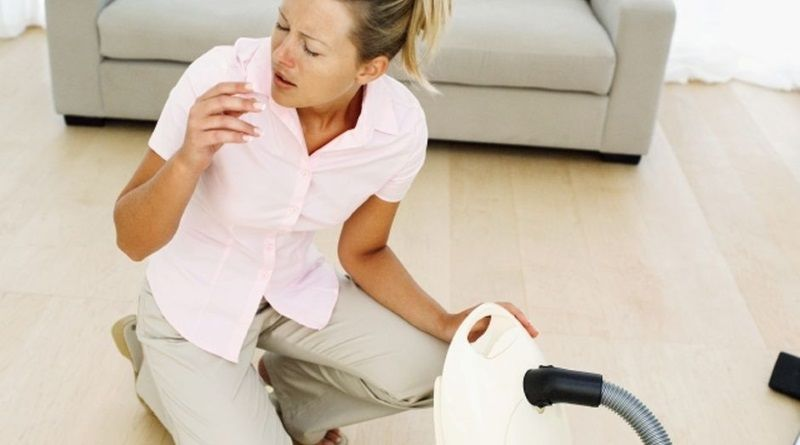

Воздух в доме грязнее, чем на улице.
Современные дома строят таким образом, чтобы сохранить тепло. Возникает эффект «запечатанного дома»: концентрация вредных веществ внутри в 10 раз (иногда в 40 раз) выше, чем снаружи (EPA, Environmental protection agency, USA). И среди этих вредных веществ нужно обратить особое внимание на пыль – ведь она не только «неэстетична» и портит интерьер, но и вредит вашему здоровью. При этом не так опасна крупная пыль как та, которая невидима глазу – мелкодисперсная. Она состоит из останков пылевых клещей и продуктов их жизнедеятельности (белковых соединений), вирусов, бактерий, грибков, плесени (и это ещё не полный список). “В домашней пыли есть всего понемногу. У разных людей аллергия бывает на разные вещества (например, сухие кусочки тараканов весьма опасны), но главная причина — мельчайшие клещи в пыли". (Thomas Platts-Mills, Doctor, Virginia University Allergy and Immunology medical centre).
Пыль – причина приступов аллергии и астмы.
При вдохе крупная пыль задерживается на слизистой оболочке носа, а мелкодисперсная – проникает прямо в легкие. Там она мгновенно всасывается в кровь, минуя все барьеры. Организм реагирует на чужеродные вещества, «включает защиту» – и запускается аллергическая реакция, постоянные спутники которой – насморк, удушье, сыпь. Особенно вредно находиться в пыльных помещениях людям, страдающим астмой – серьёзным аллергическим заболеванием, опасным для человека. Для них чистый воздух – это на самом деле вопрос жизни и смерти.
Аллергия ослабляет иммунитет
Иммунную систему человека можно сравнить с сосудом. Чем сосуд больше, тем лучше иммунитет. Чрезмерная атака вредных факторов (химия, вирусы, аллергены) ведет к переполнению сосуда и его разрушению. Аллергены «съедают» значительную часть иммунитета, лишая человека работоспособности и хорошего самочувствия. «Повторяющиеся аллергические вспышки со временем могут создать повышенную нагрузку на иммунную систему. Расходуя свои ресурсы на погашение аллергических вспышек, она постепенно истощается и при настоящей угрозе для организма может не справиться с его защитой». (Allan Bock, Professor, Board certified in Allergy, Asthma and Immunology, University of Colorado Health Sciences Center).